PMS差分の作り方について、ツールの導入方法と、PMS特有の注意点にもフォーカスを当てつつご紹介します。
創作差分を作る際「本体(原曲) 作者さんへの許可取りが必要ですか？」 という質問を伺った例がありました。
結論から言えば、本体作者さんが readme.txt 等で明確に禁止していない限り、差分の制作・公開は自由に行って構わない というのが暗黙の了解になっていると思われます。
差分を制作した事が作者さんに伝わると喜ばれる場合がほとんどなので、気軽に制作されてはいかがでしょうか。
一方、差分制作は作者さんの厚意で成立しているという意味でもあります。誹謗中傷等、モラルに反する内容は作成しないでください。
大規模すぎる原曲破壊が物議になった事もあります。神経質になりすぎる必要はありませんが、敬意や配慮を損なっていないかは留意しておきましょう。
・ 差分作りのマナーに関して
・ 差分エディタの導入と初期設定
- 拡張子の表示設定
- エディタのダウンロード
- エディタの初期設定
- 譜面ビューアーとの連携設定
・ 基本的な差分作成の流れ
- PMSファイルの準備
- テンプレート (未配置譜面) から作成する場合
- 既存のBMS差分から再編成していく場合
- 既存のPMS差分から再編成していく場合
- 配置作業
- 通常ノート
- ロングノート (LN / #LNTYPE 1)
- スクロールスピード変化 (ソフラン / BPM ノート / 時間編集モード)
- 不可視ノート・地雷ノート
- PMSの譜面属性について詳しく解説しているサイト
- 譜面ビューアーでの確認 (mBMplay)
- よくある質問・マニュアル表記外の諸注意
- 譜面情報・各種パラメータの設定
- 判定ランク (#RANK)
- 難易度種別 (#DIFFIC / #DIFFICULTY)
- レベル設定 (#LEVEL)
- ゲージ重さの設定 (#TOTAL)
- ジャンル名 (#GENRE)
- 差分名 (#SUBTIT / #SUBTITLE)
- 差分作者名 (#SUBAR / #SUBARTIST)
・ 差分のチェック ～ 公開
- PMS譜面ミスチェッカー (PMS Mistake Checker)
- 特に重要なエラーと対処方法
- 音ズレ音抜けチェッカー / Anzu BMS Diff Tool
- BMAnalyzer
- 差分のアップロード先について
はじめに、ファイルの拡張子を表示させる方法 (Win10) (Win11) を参照し、拡張子を表示しておいてください。
一般的なBMSに使われている拡張子は .bms .bml .bme 等ですが、PMS差分を識別するための拡張子は .pms で統一 されていて、拡張子を書き換える操作が度々必要になります。
【Download】pBMSC
- iBMSC / uBMSC というアプリケーションから派生したバージョンです。UI は変わらないので、他バージョンを使っている場合は読み替えてください。
- ver.3.5.5.16 (2022/05/31) を基準に解説します。
ダウンロードして解凍したら、pBMSC.exe をダブルクリックで起動します。
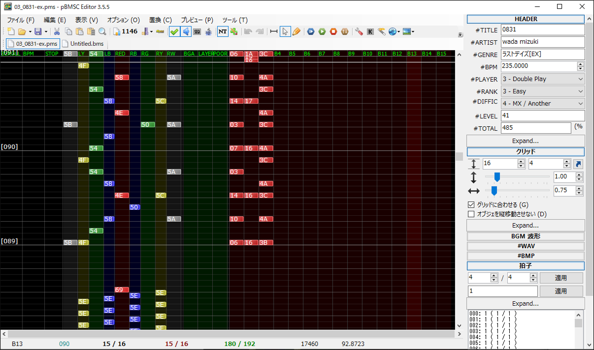
・ 言語設定 : 画面上部のツールバーから Options > language > 日本語 に変更
- 以降は日本語基準で解説します。(ごめんなさい。)
・ ツールバーから オプション > 一般オプション を開き、次の設定を確認して OK
- BMS のグリッド最大分解能 を 10000 に設定
- 「拡張 BPM の最大仕様数を1295個 (01～ZZ拡張) にする」にチェック
- 「STOP の最大仕様数を1295個 (01～ZZ拡張) にする」にチェック
- 文字コードが "System ANSI (日本語 (シフト JIS))" になっていることを確認 *本体プレイヤー上で文字化けする場合はここを確認
・ (pBMSC のみ) ツールバーから ツール > #TOTAL ツール を開き「推奨値を表示」「推奨TOTALを表示」「#TOTALを自動入力」のチェックを解除して OK
- SP/DP差分を作る際は非常に有用なオプションなのですが、PMSの場合は TOTAL値の計算規則が特殊 (後述) なため、都度手動調整した方が確実という事情があります。
・ 画面右側のオプションパネルから グリッド > 中にある Expand... をクリックし、「BGM 列の数」を 100 以上に変更
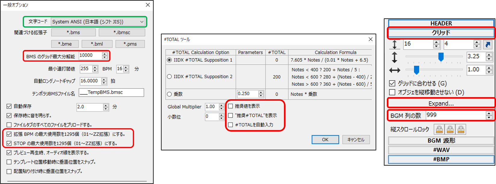
ここでいう譜面ビューアとは、譜面作成中のテスト再生を想定した 再生特化型の BMSプレイヤーです。エディタと連携してその場再生できるのが便利です。
【Download】mBMplay
- 細かくカスタマイズして使いこみたくなったら、同ダウンロード会場にある mBMconfig も導入しておきましょう。
- ver.2.22.0222.0 を基準に解説します。
ダウンロードして解凍したら、下図のように mBMplay フォルダを pBMSC.exe のディレクトリ配下に配置してください。
- mBMplay と pBMSC が同一のディレクトリにあると mBMplay が音声を再生しなくなる？ 問題があるようで、そのための対策となっています (要フィードバック)
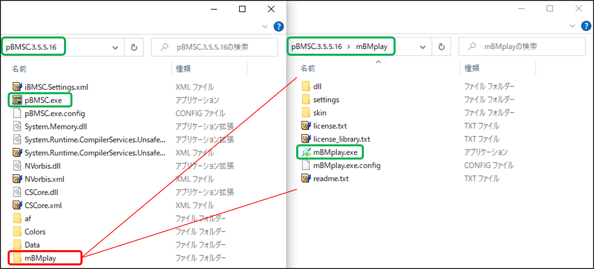
次に pBMSC を開いて、ツールバーから オプション > 再生ソフトの設定 > Current Player: mBMplay を選択 してください。
ファイルパスの再設定をします。パス欄右側の […] アイコンをクリックして、上記工程で配置した mBMplay.exe を選択 > 開く > OK
再生確認をしてみましょう。適当な PMS ファイルを pBMSC にドラッグ&ドロップで開き、ツールバーから再生ボタンをクリックします。
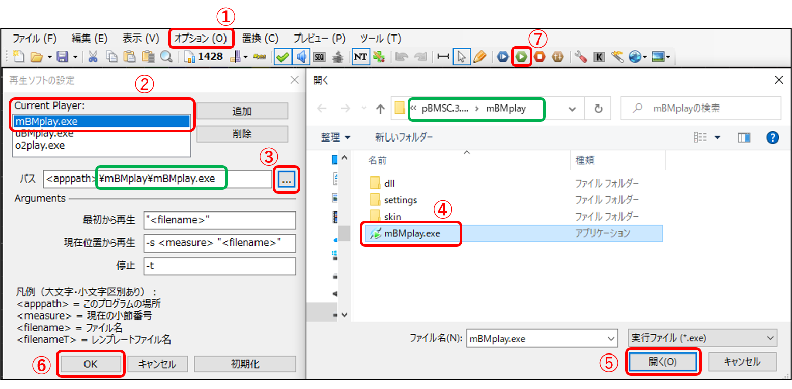
正常に再生できれば、エディタの初期設定は全て完了です。
Reference: BMS command memo (JP) - PMS
PMS は内部的には #PLAYER 3 (14KEYSモード) の 1P 1～5KEY / 2P 2～5KEY への配置と同義なので、両者を区別するために #PLAYER 3 かつ 拡張子が .pms でないといけません。
元となるファイルのフォーマットによって必要な作業が少し変わりますので、いくつかの例を挙げてみます。
本体 BMS によっては、差分制作者向けのテンプレートファイルが用意されている場合があります。"base.bmx" のように拡張子が改変されている事が多いので、
まず ファイルの拡張子を .pms に変更 し、次に pBMSC を開いて、画面右側のオプションパネルから #PLAYER を 3 - Double Play に変更 してください。
その後は、すぐに配置作業を始められます。
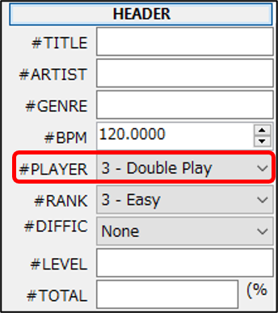
BMS用に配置されているオブジェクトを、PMSとして利用できるように整理する必要があります。
下記ツールを使用すると、全てのノートをBGMレーンに整列させる ことができます。その後は、上記のテンプレートから作成する場合と同様に作業してください。
■ BMS to BGM Converter *オススメ
■ BGMレーンソーター
テンプレートからではなく BMS(SP/DP) 用の演奏レーンに配置されているオブジェクトを流用したい場合は、エディタ上で引っ越しを行います。
元となるBMS差分を pBMSC で開き、
(1) オプションパネルから テーマ > IIDX.Theme.xml に設定します。
(2) 演奏レーンのノーツをドラッグ等で全選択し、BGM レーンに仮移動します。
(3) #PLAYER を 3 - Double Play に変更します。
(4) オプションパネルから テーマ > Pomu.Theme.xml に設定します。
(5) (2)で移動したノーツを演奏レーンに差し戻します。
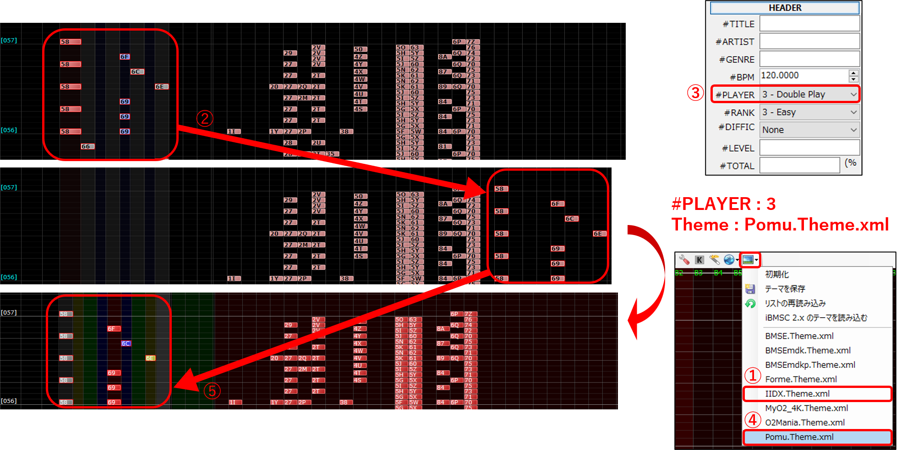
そのまま配置作業を始められます。
オプションパネルから テーマ > Pomu.Theme.xml に設定 し、1～9KEY にノートを配置していきます。
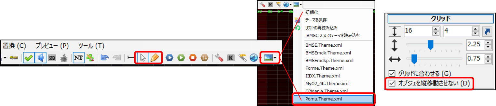
・ 編集モード (オプションパネルのマウスカーソルアイコン) *普段はこのモードを使用
既存ノートをドラッグで移動し、1つずつ配置していきます。ノートをクリックするとキー音を確認できます。(uBMSC 以前のバージョンでは .wav 音声のみ再生可能)
ノートを縦方向に動かしてしまうと意図しない音ズレに繋がるので、オプションパネル > グリッド > "オブジェを縦移動させない" にあらかじめチェックしておくことを推奨します。
pBMSC では、キーボードショートカットで配置することもできます。ノートを選択した状態で、キーボードの 1～9 キーで各レーンに配置、0キーでBGMレーンに移動
PMS差分を作り慣れていない場合は、意図しない 無理押し にも注意しましょう。
・ 書込モード (オプションパネルの鉛筆アイコン)
このモードでは、クリックした場所に新しくノートを追加する事ができます。
配置される音は オプションパネル > #WAV で選択中の音であり、従って #WAV 定義されていない音を選択すれば、無音ノートとして配置することも可能です。
・ LN 入力モード (オプションパネルの"NT"アイコン)
このモードをチェックした状態で、Shift キーを押しながら ノートを縦方向にドラッグ すると LN になります。
LNを解除したい場合は Shift + LN末端をドラッグで原点に重ねるか、LNを範囲選択して ツールバーから 置換 > → ノーマルオブジェ を選択してください。
pBMSC の場合は、キー音の波形表示・自動ロングノートなど、LN入力用の便利機能があります。慣れてきたら試してみても良いかもしれません。(詳しい解説は省略します)
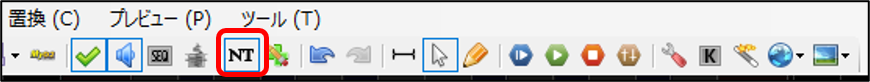
・ LNOBJ xx の設定解除
上記のLNの配置方法は #LNTYPE 1 と呼ばれています。このほかのLN配置方法に #LNOBJ xx というものがあるのですが、本ガイドでは解説を省略します。
ただし、これら2つの方法(定義) が重複していると致命的なバグが生じるので、使わない方の定義 (今回の場合 #LNOBJ xx) が解除されていることを必ず確認してください。
右側のオプションパネル > HEADER > Expand... を展開し、#LNOBJ を None (#LnType 1) に変更 します。
元となるBMS差分によっては、(テンプレートファイルであっても) デフォルトで #LNOBJ が設定されている場合があります。毎回確認するようにしてください。
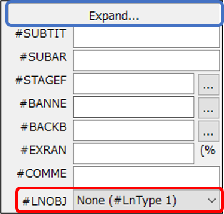
・ LN / CN / HCN の指定 (beatoraja 向け)
右側のオプションパネル > 拡張命令 のフリースペースに "#LNMODE n" (n … 1:LN / 2:CN / 3:HCN) と記入 すると、beatoraja で再生したときのLNの挙動を指定できます。
・ LN … 末端判定なし
・ CN … 末端判定あり
・ HCN … 末端判定あり、押している間は継続的にゲージ増加、離している間はゲージ減少
LR2 では #LNMODE 命令は無視され、自動的に LN が適用されます。
本家と LR2 の仕様に極力寄せたい場合は、#LNMODE 1 と記入するか、記入自体を省略すれば OK です。
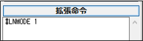
ソフランを追加したり削除したい場合には、オプションパネル > 時間編集モード (物差しアイコン) を利用します。
時間編集モードを起動すると、画面下部に専用のウィンドウが表示されます。また、ノート配置画面でのカーソル操作が区間選択 (紫ライン) に切り替わります。
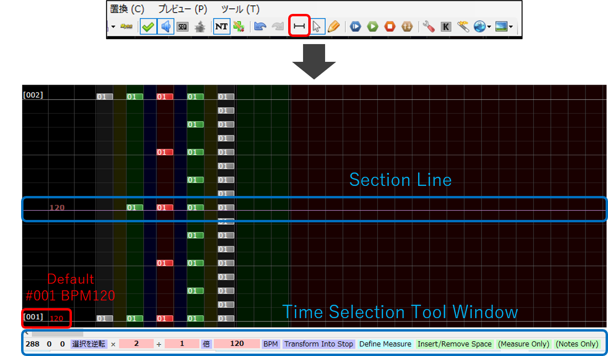
一例として、上記画像の 2/4 ～ 4/4 節の区間に 倍速 (BPM240、ノート間隔2倍) のソフランを適用してみます。
(1) 変化させたい区間の 始点をクリックしたあと、終点までドラッグ または 終点を Shift + クリック して区間選択 します。
(2) 終点部を Shift + ドラッグ するとノートが引き延ばされる ので、目標のソフラン幅 (今回は2倍幅 = 追加された BPM ノートの値が 240 になる地点) までドラッグします。
- または 時間編集ウィンドウ内に 倍率 (今回は 2÷1 倍) を入力し、[倍] ボタンをクリック でもOK
(3) 引き延ばされた小節長を補正します。元の小節線からのズレ幅と同じだけ #001 内を区間選択して、
(4) 時間編集ウィンドウの (Measure Only) をクリックすると、小節線が補正されます。(ノート位置を維持したまま小節線位置だけを時間編集する、pBMSC の独自機能です)
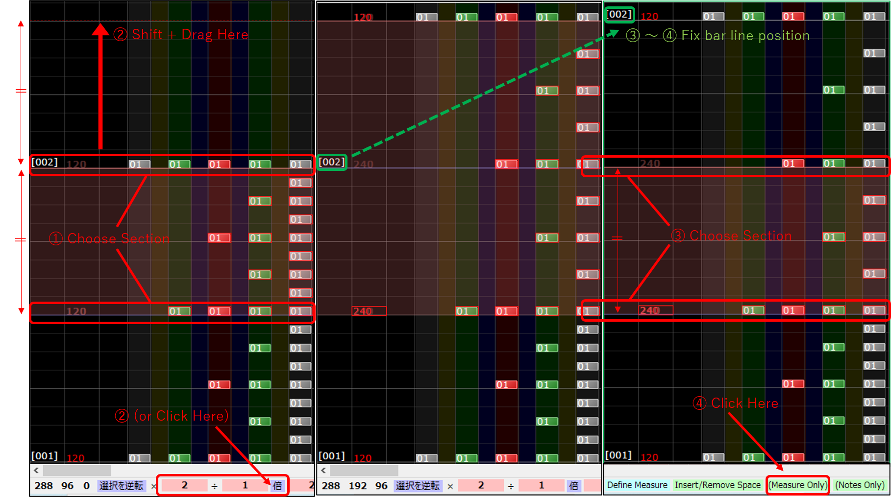
既存譜面のソフランを排除したい場合は、逆の倍率操作を行えばOKです。
ワープギミックや STOP などの特殊なソフランについての解説は、すみませんが本ガイドでは省略します。興味のある方は「譜面ギミックの作り方」 記事などを参照ください。
【注意】
・ (3)～(4) 工程は pBMSC の独自機能です。uBMSC 以前のバージョンを使用している場合は、右側オプションパネル > 拍子 > Expand... > 「絶対的な位置を保つ」「小節の長さに合わせて位置を変化させる」を活用して、小節線の位置を補正してください。(かなり手間なので、この工程だけ pBMSC に移行するのも良いと思います)
・ 時間編集によって 192分音符1つ分の幅よりも細かすぎる微ズレノートが現れると、LR2 / beatoraja で正常に再生されなくなる場合があります。テストプレイを必ず行ってください。
・ 不可視ノート : 書込モード中に、ctrl キーを押しながらノート配置
不可視ノートの判定タイミング内でボタンを叩くと、本来のキー音よりも不可視ノートのキー音を優先的に鳴らすことができます。
曲のキメポイントや長い休符地帯で空打ちさせないために無音不可視ノートを配置したり、隠しキー音を仕込んだりといった目的で使用されます。
・ 地雷ノート : 書込モード中に、ctrl + shift キーを押しながらノート配置
叩くとゲージが減少してしまうノートです。通常使用する機会は少ないですが、ギミックと組み合わせた演出で活用される場合があります。
ダメージ率は WAV 定義番号を 36→10進数変換 した値(%) となります。定義番号 01 で 1% 2S 以上で 100% ダメージ (要検証)
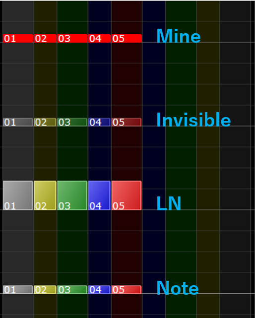
■ 差分作成のアレコレ (西ヶ蜂さん) ガイド中央付近、譜面属性の解説欄をクリックで展開
■ ポップンミュージック上級攻略Wiki - 譜面属性
■ 用語集 - asagaolabo
■ ポップンミュージック(Pop'n Music)の練習法についての考察 - 入隠者通信 ～病を嗜む～
■ 9鍵盤BMS(PMS)集中解説 (激辛党さん)
オプションパネルの 現在位置から再生 (再生アイコン) で mBMplay を呼び出し、譜面をプレビューする事ができます。
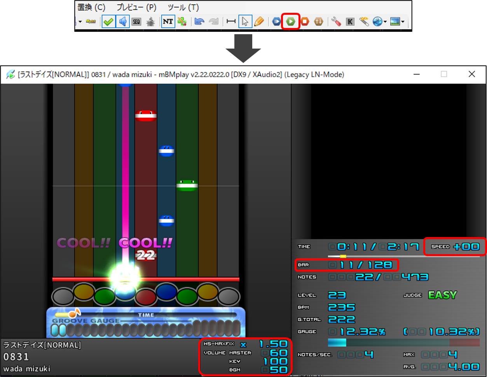
筆者が特によく使う操作をリストしてみます。操作方法の全容は 公式マニュアル を参照してください。
・ ↑↓キー / マウスホイール : 1小節ずつシーク (早送り/巻戻し)
・ Shift キー + ↑↓ / マウスホイール : 4小節ずつシーク
・ スペースキー : 曲の先頭にジャンプ
・ 画面内のシークバーをマウス操作 : 指定位置にジャンプ
※ 以下は画面内マウスクリックでも操作可能です
・ 数字1 / 2 : ハイスピード変更
・ 数字5 / 6 : HS-FIX タイプ変更 *普段使いには HS-MAINTIME または HS-MAXFIX がオススメ
・ 数字3 / 4 : マスターボリューム変更
・ Q / W : キー音のボリューム変更
・ E / R : BGMレーンのボリューム変更
・ 数字7 / 8 : 再生速度 (FREQ) 変更
・ PMS を配置しているのに DPスキンで起動してしまう場合は、拡張子、未使用レーン配置など PMSファイルの構成に問題があります。→ (1) PMSファイルの準備
・ 不可視ノートと地雷ノートは mBMplay で表示させることができません。
・ 一時停止機能は実装されていません。
・ 毎回の起動に非常に時間がかかる場合は、oggdec を使って本体BMS の音声ファイルを .wav に変換してみてください。
・ 読み込み途中でクラッシュする場合や 99% 読み込んだ所でフリーズしてしまう場合は、BGA ファイルを (定義やBGAノートではなく、ファイル自体を) 削除してみてください。
ゲームバランスに直結するパラメータや体裁の調整です。pBMSC 右側の オプションパネル > HEADER タブ内で設定します。
配置作業を終えてからでないと記入しづらい項目もありますので、主に仕上げ段階で行うことになるでしょう。
いずれも重要な項目な上、公開後に修正すると IRページが分裂します。書き漏らさないように注意してください。
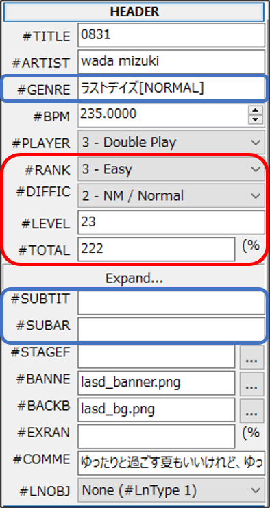
■ 【発狂PMS】beatoraja/LR2仕様比較まとめ > 判定幅比較
通常は 3 - Easy (beatoraja で本家通常判定に相当) または 2 - Normal (beatoraja で本家辛判定に相当) のいずれかで設定します。
Hard / Very Hard 判定はつまり思想なので、適用したい場合は色々理解した上でどうぞ。Very Easy は互換性に難があるため、Easy 判定の方が堅実です。
選曲画面での色表示やソートに影響する、体裁管理系の設定です。1: EASY 2: NORMAL 3: HYPER 4: EX 5: INSANE
PMS Database ではレベル46以上の譜面に ●数字を使った難易度付けを行っていますが、#LEVEL 表記は本家さん同様に 50 (+α) 段階で記入 して頂けると助かります。
レベル51～55, 99 表記は PMS Database で独自に使用しています。(基準が分からなければまとめてレベル50 表記にしておいても意図は伝わるでしょう)
■ PMS用TOTAL計算機 (LR2 / beatoraja 両対応 オススメ)
■ TOTAL値の設定 *Yosk! さんによる解説記事と計算機 (Internet Archive)
■ ゲージの重さ(TOTAL値)について *misty.ls04 さんによる解説記事
■ 【発狂PMS】beatoraja/LR2仕様比較まとめ > ゲージ仕様比較 *極端なTOTAL値を設定した場合の HARDゲージ増減量にかかる補正などの解説
#TOTAL はグルーヴゲージの最大回復量を表すパラメータです。
#TOTAL ÷ 総ノート数 ＝ 1ノート当たりの増加率 に相当し、本家の境界値では 1025ノーツの時 TOTAL 200(0.195 %/note), 1537ノーツの時 TOTAL 150(0.097 %/note)
IIDX ゲージとは全く別物で、安易に設定してしまうとバランス難で泣きを見ます。設定を省略してしまうと LR2 / beatoraja でゲージの重さが大幅に変わるため、こちらも非推奨です。
テストプレイを重ねて、慎重に設定してください。
任意の設定項目です。カタカナ表記や創作ジャンルを設定すると、ポップンらしいフレーバーを加えられるかもしれません。 (参考) ジャンル名 - asagaolabo
たとえば [PMS NORMAL] [9KEYS EX] [UPPER] のような表記タイトルです。もっと自由に命名しても大丈夫。省略しても OK です。
たとえば obj: pmsdatabase のように記入します。省略することもできますが、偽名でも良いので何かしら記入しておいた方が作者の区別になって良いでしょう。
■ PMS譜面ミスチェッカー (PMS Mistake Checker)
無理押しをはじめ、PMS 特有のエラーをひと通り拾ってくれる必携ツールです。
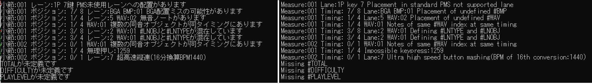
・ PMS未使用レーンへの配置があります : (1) PMSファイルの用意 で行った初期操作に問題がないかを確認
・ BGA配置ミスの可能性があります : BGAレーン (右白レーン ～ BGMレーンの間の 深緑レーン) に音声ノートが誤配置されていないかを確認
・ #LNOBJと#LNTYPEが混在しています : (2) 配置作業 > ロングノート (LN / #LNTYPE 1) > LNOBJ xx の設定解除
・ 無理押し : 無理押し - asagaolabo 当該の小節線 / ポジションを確認
・ 超高速縦連 : 当該の小節線 / ポジションを確認 *config.txt でエラー検出の閾値を変更できます
・ TOTALが未定義です : (4) 譜面情報・各種パラメータの設定 > ゲージ重さの設定 (#TOTAL)
■ bms diff tool 音ズレ/音抜けチェッカー (Webツール)
■ Anzu BMS Diff Tool (アプリケーション)
「作成した差分」と「基準になる差分」を指定すると、音の鳴っているタイミングに違いがないか、鳴りすぎていたり欠落している音がないかをチェックしてくれるツールです。
「基準になる差分」には 本体BMS に同梱されているテンプレートや、作者さんが制作した同梱譜面を用います。
音の鳴り方が厳密に一致しないといけないというわけではなく、意図的にずらした部分と配置ミスを切り分ける目的で使用されます。
ずらした記憶がないのに大量の微ズレが発生している場合は、エディタの分解能設定を見直してください。 → (3) エディタの初期設定
■ GLAssist v232 に同梱されている BMAnalyzer.jar
区間密度やゲージ上昇量、譜面画像などを可視化できるツールです。最終確認のお供に。
BMAnalyzer.jar を開き ファイルを指定して起動するほか、GLAssist の差分検索結果から右クリックで呼び出すことも可能です。
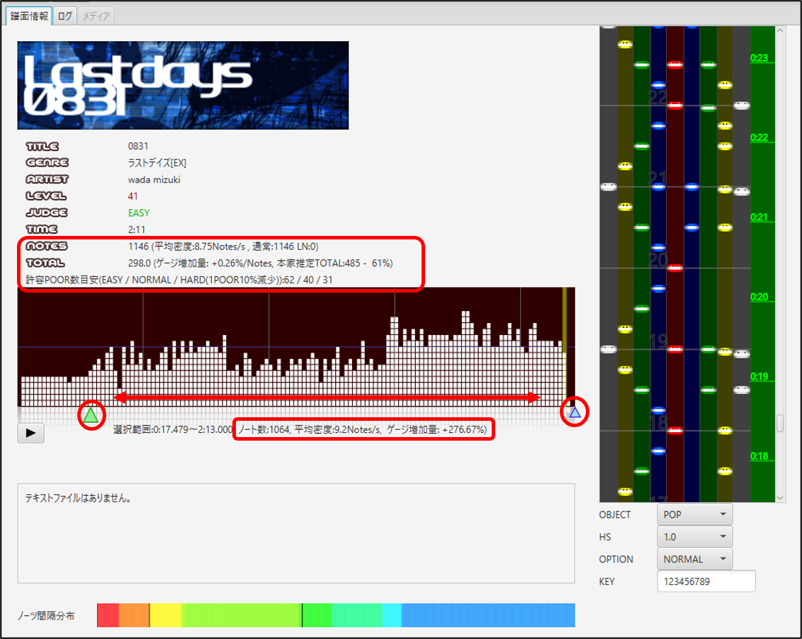
■ Stella Uploader (共同アップローダー)
- プレイスタイルを問わず様々な差分を投稿可能 2023/06 現在最も主流のアップローダー
■ Google Drive (個人用オンラインストレージ / 標準的 / 15GB)
- フォルダの共有設定を確認してください。デフォルトで「自分のみ」になっている場合があり、URLを共有しても第三者にはダウンロードできません。
■ Dropbox (個人用オンラインストレージ / 標準的 / 2GB)
■ MEGA Uploader (個人用オンラインストレージ / 高匿名性 / 50GB)
----------
その他のストレージサービス、あるいは個人のホームページで公開頂いても構いません。公開場所はともかく 差分が公開されていることが明らかになって欲しいので、
X(Twitter) / Discord などでのアナウンス、Mocha-Repository へのスコア送信 (& URL共有) など 情報発信のご協力をお願いします。